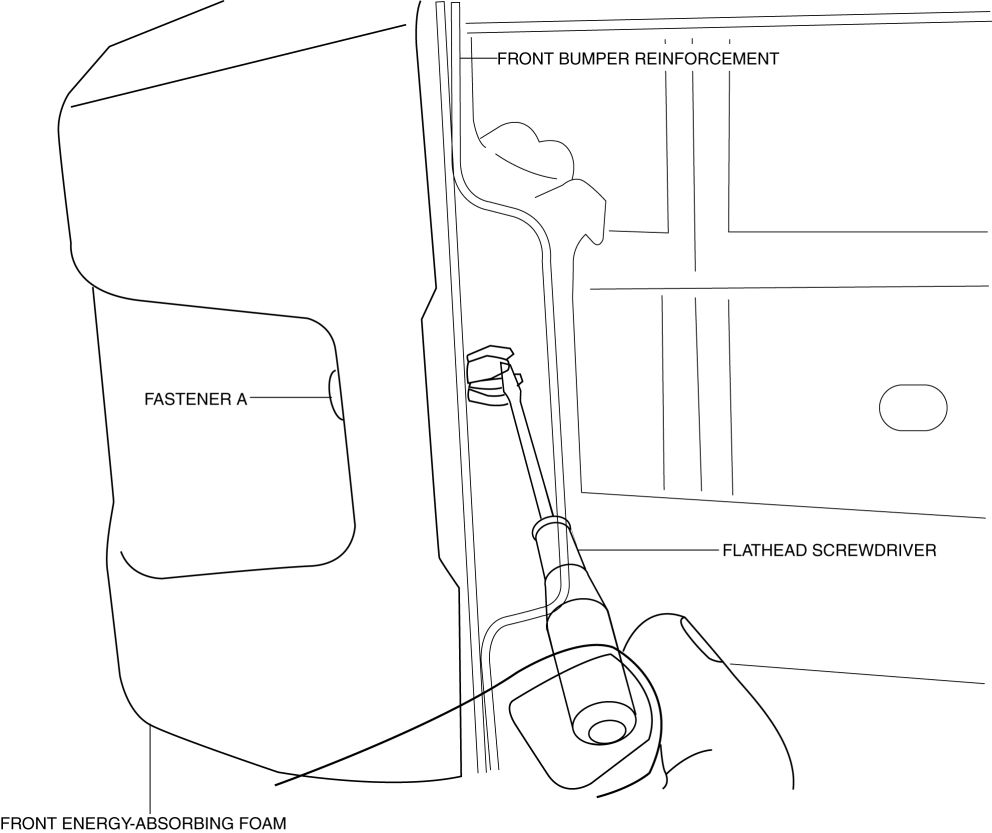
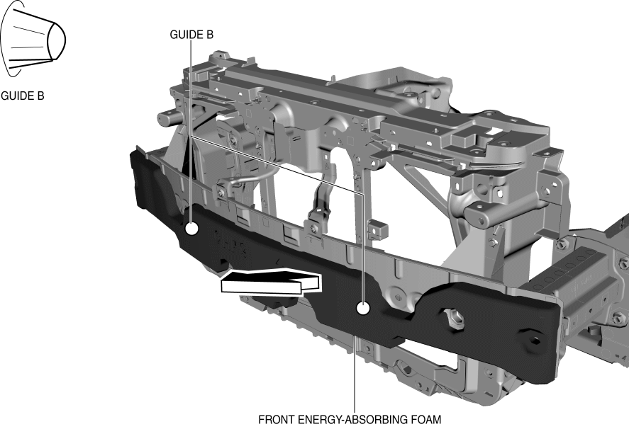
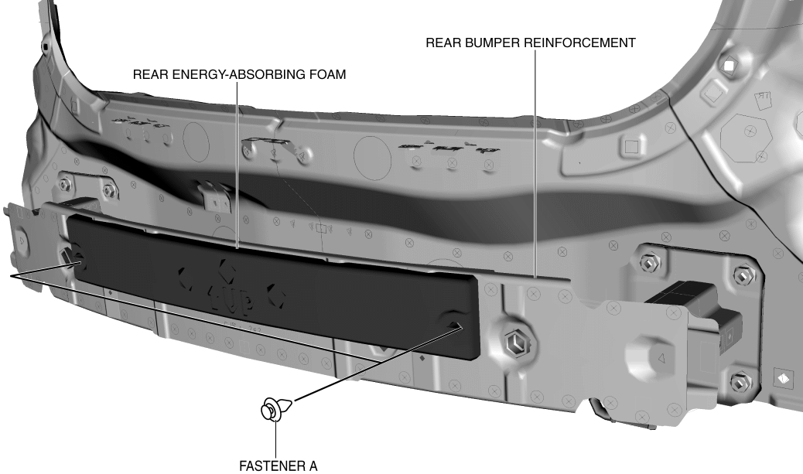
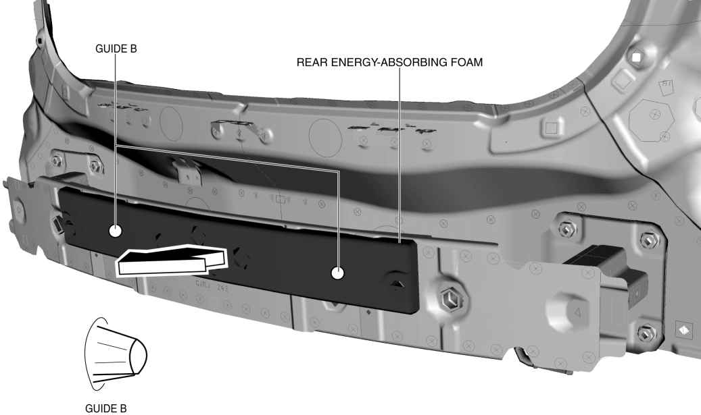

< Previous
Next >
2014 -
Mazda6 -
Body and Accessories
ENERGY-ABSORBING FOAM REMOVAL/INSTALLATION
Front Energy-absorbing Foam
1. Disconnect the negative battery cable. (See NEGATIVE BATTERY CABLE DISCONNECTION/CONNECTION [SKYACTIV-G 2.5].)
2. Remove the set plate. (See SET PLATE REMOVAL/INSTALLATION.)
3. Remove the front bumper. (See FRONT BUMPER REMOVAL/INSTALLATION.)
4. Insert the flathead screwdriver shown in the figure, push fasteners A for back side of front bumper reinforcement.

5. Pull the front energy-absorbing foam in the direction of the arrow shown in the figure while detaching guides B

6. Install in the reverse order of removal.
7. Adjust the front fog light aiming. (with front fog lights) (See FRONT FOG LIGHT AIMING.)
Rear Energy-absorbing Foam
1. Disconnect the negative battery cable. (See NEGATIVE BATTERY CABLE DISCONNECTION/CONNECTION [SKYACTIV-G 2.5].)
2. Remove the following parts: a. Rear combination light (See REAR COMBINATION LIGHT REMOVAL/INSTALLATION)
b. Rear splash shield (See SPLASH SHIELD REMOVAL/INSTALLATION.)
c. Rear bumper (See REAR BUMPER REMOVAL/INSTALLATION.)
3. Remove fasteners A.

4. Pull the energy-absorbing foam in the direction of the arrow shown in the figure while detaching guides B.

5. Install in the reverse order of removal.
< Previous
Next >
© 2012 Mazda North American Operations, U.S.A.